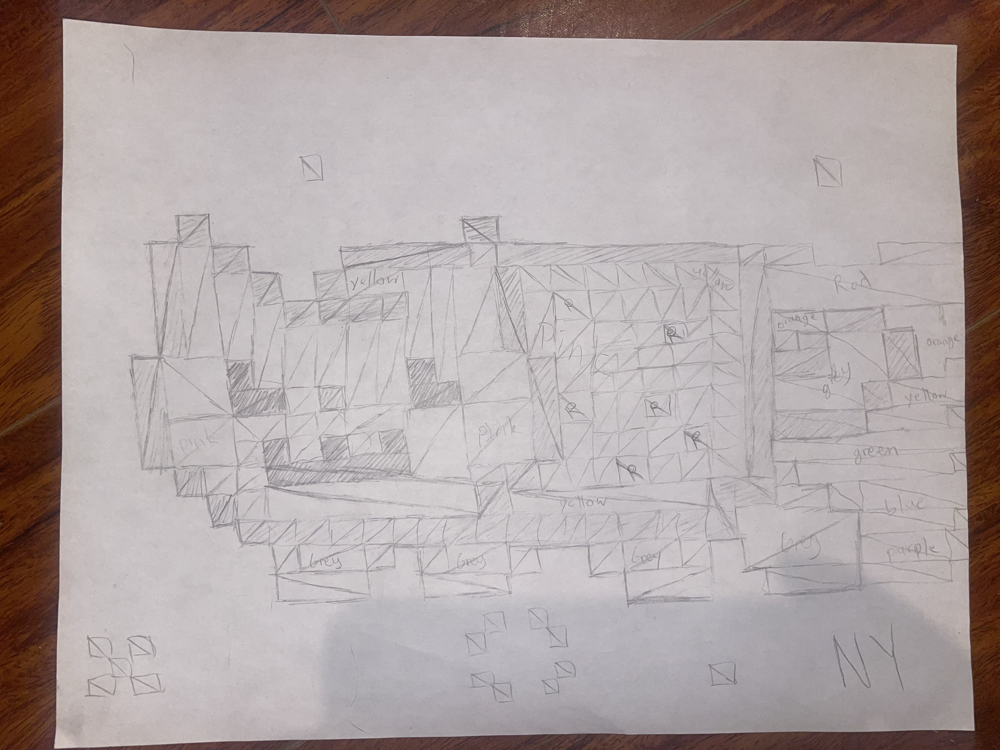

Please use a browser that supports "canvas"
XXX
Reference Drawing

Draw This Picture!!!
Reset
Clear
Undo
Changelog
Extra Changes
Reset Button:
Resets all settings to their default values.
Undo Button:
Undoes the last action.
Drawing Mode:
Selected shape is bolded to indicate the current mode.
RGB Sliders:
Changed it to 0-255 values for max accuracy, can also the number value
RGB Preview:
Shows a live preview of the selected RGB color.
Eraser:
A nice eraser! Change it with the size!
Segments Slider:
Only enabled when drawing circles to prevent confusion.
UI:
Improved layout and usability of the UI elements.
Changelog:
This button! Shows the extra changes I made :D
Close
Drawing Mode
Square
Triangle
Circle
Shape Color
Red
Green
Blue
Eraser
Red
255
Green
255
Blue
255
Preview:
rgb(255, 255, 255)
Size
5
Segments (Circle)
20